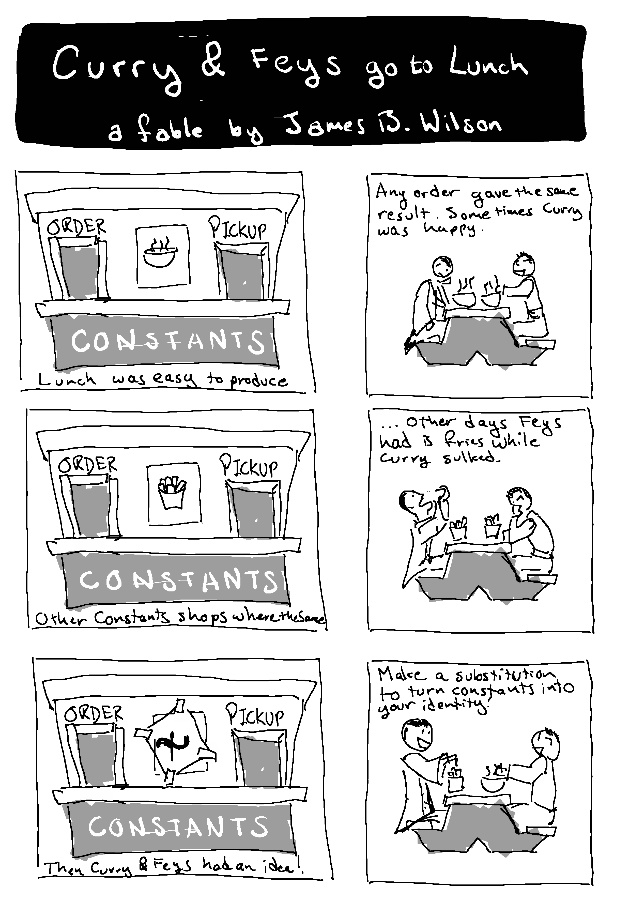

3 Substitution, Variables, and Functions
When you think of a variable like \(x\) do you ever think of it like a “fill-in-the-blank” where you get to write values inside?
\[
y=3x+7 \quad \leadsto \quad y=3\boxed{\phantom{x}}+7
\]
While some of this is correct it has some limitations that might go unnoticed and setup confusion. That confusion is easy to talk out when arguing in person but when it comes to computing we have to be thorough. So let’s consider what happens if we take the “fill-in-the-blank” story of variables a bit too seriously. Then we will set out to fix the problems that creates.
3.1 The Paradox of the Trapped Variable

Every restaurant in the \(K\)onstant’s chain serves exactly one menu item \(c\). Yet the restaurant whose item is \(c=x\) serves every possible order.
Para is Greek for “side-by-side” and “Dox” is “belief”; so, a paradox is two beliefs side-by-side, often in conflict with each other. The purpose of a paradox is to highlight the need for a change somewhere. What exactly we change is often a choice and we live with the consequences. The paradox of the trapped variable leads us to one of two choices.
- \(\lambda\)(“lamb-da”)-Calculus (“Software”): give up on variables as “fill-in-the-blanks” and instead treat variables as a foreign letter from a separate infinite alphabet mixed into the language with which we write our data (much like the name “\(\lambda\)-calculus” mixes the Greek alphabet with the English).
- Combinatory Logic (“Hardware”): give up on variables entirely and focus on hardware instructions.
Try out some situations from algebra that also feature this paradox. If you feel uneasy following some of the instructions try to think back to any rules or experiences you were taught. It could be that you learned to avoid this paradox long ago without even knowing it existed.
- What is the slope of a line of the form \(y=b\)?
- What is the slope of the line \(y=x\)?
- If you start with a line of type \(y=b\) and then substitute \(b=x\) so that \(y=b=x\) does your line have the slope of part 1 or part 2 or something else? If you feel uneasy with the premise, can you articulate what precisely has you uneasy? If you use words like “constant” and “variable” be sure to explain properly how the unknown \(b\) is constant but the unknown \(x\) is variable.
- What type of graph is the function \(y=m\cdot x+b\)? (e.g. line, parabola, circle, etc.)
- What happens if you substitute \(m=x\)?
3.2 Mappings, functions, and tuples
To fix the paradox of the trapped variables we will want to revisit what we really want from substitution and variables. Variables are meant as abbreviations for work we are not prepared or capable of doing. For instance, in the “Curry & Feys got to lunch” fable, the restaurant chain “Konstants” serves only one item. We can draw an arrow from each order to what you actually get served. For the restaurant that only serves Curry that diagram would look like this. We read \(\mapsto\) as “maps to” (hover over the symbols to learn how to read them and how to reproduce them in your own writing). \[ \begin{aligned} \text{Haskell} & \mapsto \text{Curry} \qquad \text{(``Curry maps to Curry''') },\\ \text{Robert} & \mapsto \text{Curry} \qquad \text{(``Robert maps to Curry'') },\\ & \vdots \end{aligned} \] Do not be afraid to draw the arrows in reverse or with wobbles and turns. They just need to point in the right way. For instance the following flowchart will suffice.
If we knew every customer we could write a complete list. Indeed most software platforms include a data structure with names like Map to do just that: store the list of inputs (keys) and outputs (values). You give it the input name and it outputs the value that goes with it.
When the list of known customers is finite, we can write the mappings directly.
Languages often decorate their tokens with other information declaring the kind of data they will manage, for example String to indicate strings and quotes around constants like "Curry". You can get pretty far by simply ignore those details and looking at the shape of the program first coming back later to clarify what those terms do.
However, sometimes a whole list is impossible or unreasonable. In math the ellipses ‘\(\ldots\)’ (whether drawn left-to-right, top-to-bottom, or diagonally) signals that a pattern continues. Unfortunately mathematicians are not always clear what that pattern really means and that is why most programs cannot abide the ellipses ‘\(\ldots\)’. So when we compute we will need to spell out what we mean. In the case of Konstant’s restaurant chain the pattern is that no matter who the customer is they always get served the same think. So at the Curry branch, they only serve Curry. The pattern here is to treat the customer’s name as a place holder, say \(x\), and point out that \(x\) always produces Curry. \[ \tag{Lambda} x \mapsto \text{Curry} \qquad \text{(``$x$ maps to Curry'') } \] Historically Alanzo Church used the Greek letter \(\lambda\) and the notation \[ \lambda x.\text{Curry} \] For that reason the subject of variables and substitution is often known as \(\mathbf{\lambda}\)-calculus. In software you find these written in different ways often relying on limited symbols on a keyboard. More recent programming languages allow the above \(\LaTeX\) or Unicode so that code reads more like a the mathematics. An AI code assistant can help you out on these details if you get stuck.
Keep in mind that outputting “Curry” is just the description of one restaurant in the Konstant’s chain. The Fries branch would serve \[ x \mapsto \text{Fries} \qquad \text{(``$x$ maps to Fries'') } \] The terms \(x\mapsto M\) are called lambda’s, anonymous functions, or sometimes just functions. The \(M\) is called the program or body of the function. The \(x\) is called the parameter or input of the function.
Here are some other examples of lambda’s. \[ \begin{aligned} x &\mapsto \text{Feys}, & x & \mapsto x, & i & \mapsto i+1, & t & \mapsto \frac{1}{2}at^2+v_0 t \end{aligned} \] Notice we do not always use \(x\) as the placeholder.
Naming functions.
Eventually we get confused if the only functions are given by programs. So we like to give functions names. In mathematics these are often single letters like \(y\), \(f\), and \(g\).
In mathematics we can name our functions by adding words in a paragraph or by some common notations like the following. \[
\begin{aligned}
f &: x \mapsto mx+b
&
f(x) &:= mx+b
&
f~x &:= mx+b
\end{aligned}
\] The last form is common to in math like trigonometry and calculus, e.g. \[
\sin x\qquad \log x
\]
Math also supports an array of more varied notation putting variables in subscripts, superscripts, or inside symbols: \[
\begin{aligned}
u_i \qquad e^x \qquad x^3\qquad
\sqrt{x}
\end{aligned}
\] which name programs that are often somewhat complicated and represent buttons on a calculator.
In programs we often prefer longer names like
- Camel Case Names where words and abbreviations are merged with upper case for new words, e.g.
getNameandshowPopup. - Snake Case Names where words are separated by underscores, e.g.
get_nameandshow_popup.
The differences are not as important as using the style that others in your group expect. Agreeing to the community standards will minimize mistakes and increase acceptance of your ideas. Save creativity for where it matters: better programs, new features, and beautiful insights.
In software we often use a keyword def or func. Sometimes in software there are technical differences between functions and so-called proceedures based on whether the results are returned or put somewhere else (like printed to the screen, a file or a network). Here are some common situations.
Languages like Java put the annotation of output before the function which makes sense if we think of the arrows going \(M\leftarrowtail x\) instead of \(x\mapsto M\).
Many modern languages allow Unicode so that we have a larger alphabet where we can use Greek letters like \(\varphi\) (using the \(\LaTeX\) command \(\varphi\)) and nice arrows like \(\to\) (using \(\LaTeX\) \to). This is useful when matching commands with scientific terms, but can be difficult for others to reproduce since it does not represent standard keyboard letters and so you need intermediate tools like \(\LaTeX\) or AI code assistant.
Convert the following lambda \(x\mapsto 3x+8\) into named functions in the target language.
- Mathematics.
- Python.
- Java.
- Agda.
Tuples
You can even use multiple place holders one after the other. Here we start with \(m\), then \(x\), and finally \(b\) as a place holder. \[
m \mapsto (x\mapsto (b\mapsto mx+b))
\] It is common to write multiple inputs as a single list given all at once. \[
(m,x,b) \mapsto mx+b
\] Note many software systems will prefer square-brackets to parenthesis, e.g. [m,x,b]. One subtle concern is that if we just read the list we might take this apart in a different order, for example, someone might think we meant this: \[
b \mapsto (x\mapsto (m\mapsto mx+b))
\] Ultimately it is a choice to read \((m,x,b)\) from left-to-right and since it matches the reading order of English it is default choice within English and similar languages. Even so, you may need to check with others before you assume. For example, the data science software Julia famously interprets \((a,b,c)\) as top-to-bottom, not left-to-right. So in Julia the following code
Because we read these in order we call these
- ordered pairs for \((a,b)\),
- ordered triples for \((a,b,c)\), and
- ordered n-tuples for \((a_1,a_2,\ldots,a_n)\).
Convert the following named functions into lambda’s.
- \(f(x,y) = x^2+y^2\).
- Python lets multiple inputs be given by tuples.
- In Scala you can have repeated tuples
- In Agda multiple inputs are separated by spaces not commas and read left-to-right.
3.3 What is a variable really?
Placeholders as they are used in everyday life introduce confusion with data. In contemporary US English, especially in the practice of Law, the name “John Doe” is meant as a placeholder for a yet unnamed person. If compared to other names it may not stand out as variable, which is the point, it is a name that can be used in the software and many forms that require a name while still not being attached to any specific person. In the other direction a name like “Malcom X” could place an order at Konstants as “x”, but now this is not the placeholder but the actual name. So the roles of data and variables is often quite difficult to distinguish.
The resolution is that we need to keep track of two alphabets. One alphabet is how we write down our data. The second alphabet is for variables.
To create substitution you need
- An alphabet for data, whose characters we call ‘constants’.
- A separate infinite alphabet for variables, whose characters we call ‘variables’.
A character from either alphabet is called a token. A list of tokens is called a string.
Along with those two alphabets we allow punctuation, spaces and parenthesis to gather symbols together in a grammar. These are not considered part of the tokens.
The role of the “infinite” in the variables alphabet will be seen when we fix the paradox. For now we can at least answer one question. A variable is not a placeholder, fill-in-the-blank, or a stand-in for data. It has instead a boring but precise answer.
What is a variable? A variable is a character from the variable alphabet.
Having two sorts of data is confusing and requires that we make an effort to tell everyone what we intended. In mathematics we often expect our reader to have experience and so we leave these important distinctions unsaid. For example, we often just assume you have used \(x\) as a placeholder before an you will default to using it that way now.
Programs are more forthcoming with clues about our two alphabets of data versus variables. You may need to include special markers, e.g. var x to denote the variable \(x\) and 'x' to denote the letter \(x\). Unfortunately, even programs have their ambiguity. For example, it may be as subtle as where in the grammar you use the symbol, such as def exchange(x,y): which treats the x in exchange as a letter but the x in (x,y) as a variable.
This would be a good place to mention that the term “alphabet” as used in programming would be more in line with what in English you know as a dictionary of words. So when you read “exchange” in this program you should see it as one character. To replace “exchange” we would replace the entire word, not its individual letters. This is more in line with characters in the Chinese alphabet or Egyptian hieroglyphics.
You learn these differences as the syntax and grammar of the programming language and every programming language has its own rules. Most programming languages are descendants of a few common ancestors (ALGOL, COBOL, Fortran, and Lisp). So you likely will find it gets easier to read these implied rules once you have been exposed to a few examples.
In the following code sample, find the tokens of the alphabets and identify them as either constants or variables. You are not expected to know all these languages and you may find it helpful to consult an AI code assistant for some hints.
\[ f(x) := \begin{cases} \text{Curry} & \text{if } x = \text{Haskell}\\ \text{Curry} & \text{if } x = \text{Robert}\\ \end{cases} \]
How to assign a variable.
Since a variable \(x\) is a placeholder we need a method to replace it. We say that we are “assigning a value”. Many notations have been invented for this but amongst the most common is the humorously named “Walrus” symbol \(:=\) to indicate this.
\[ \begin{aligned} (x\mapsto \text{Curry})|_{x:=\text{Haskell}} & \text{ means } \text{Haskell}\mapsto \text{Curry}\\ (x\mapsto \text{Curry})|_{x:=\text{Robert}} & \text{ means } \text{Robert}\mapsto \text{Curry}\\ & \vdots \end{aligned} \]
Notice the language of “assignment” is different than the language of “equality”. We are not “making \(x\) equal to ‘Haskell’”.
If we did then it would later seems strange to say “\(x\) now equals ‘Robert’; one thing cannot equal two different things. Meanwhile it seems appropriate to assign different substitutes for a variable. Programming literature often clarifies this by describing a variable as location or address in memory where data will be stored. When assignments x:="Curry" happen, the program copies the data "Curry" into the address of the variable x. This captures the spirit of the two separate alphabets as well: one for honest data, and one for location of that data. Unfortunately connecting variables to something physical like memory introduces limitations like the size of what we can store which are not part of the purely conceptual idea of a variable as a placeholder for any data.
Notation options. Despite the mistaken impression that equals notation gives to assignment, so much history is invested in this that it is impossible to avoid it in our everyday encounters with math and software. In mathematics it is common to find the same symbol \(=\) used for both equality testing and an assignment. The trick is that mathematics permits the addition of words and paragraphs explaining what particular role we intended. So we can say “If \(x=5\)…” to suggest a test of equality and “Set \(x=5\)…” to demand an assignment. In programming languages brevity and clarity are preferred so we often keep two different symbols. Some use a double equal sign == for the comparison and = for assignment. Others use words x.equals(y) or x eq y or similar syntax to literally spell out what they intend.
Curry-Feys Substitution rules
We would like to finally settle the paradox of the trapped variable. So let us imagine what it is we need to do to substitute. First we have a string \(M\) of tokens and a variable \(x\). Let us write down the rules for substitution the way we think of placeholders. The substitution rules are named after the mathematician/Computer Scientist Haskell Curry and logician Robert Feys who wrote them down in their book Combinatory Logic in 1958. The rules are precise, at times tricky, but they avoid our paradox so they are widely accepted today.
We will write \(M|_{x:=N}\) to mean “substitute \(N\) for \(x\) in \(M\)”.
Remember that “constant” just means a token in the constant alphabet and “variable” just means a token in the variable alphabet. So the rules that follow only care about the alphabet not some intuition about variables and constants. \[ \tag{Constant Rule} c|_{x:=N}\text{ yields }c \text{ for constants }c. \]
\(\text{Curry}|_{x:=\text{Haskell}}\) yields \(\text{Curry}\).
\(M\) has nothing to do with \(x\) so assigning \(x\) to \(N\) does not change \(M\).
\(M\) has nothing to do with \(x\) so assigning \(x\) to \(N\) does not change \(M\).
\[ \tag{Same Variable Rule} x|_{x:=N}\text{ yields }N \]
\[ \tag{Distinct Variable Rule} y|_{x:=N}\text{ yields }y \text{ if } y\neq x. \]
\(c|_{x:=N}\) yields \(c\), where \(c\) is a variable just not the variable \(x\).
For example, \(\text{Curry}|_{x:=\text{Haskell}}\) yields \(\text{Curry}\).
\(M\) has nothing to do with \(x\) so assigning \(x\) to \(N\) does not change \(M\). However, in software often you cannot have a variable without some actual data, it might just fill in a default value like \(0\) or null.
\[ \tag{Repeat Rule} (LR)|_{x:=N}\text{ yields }L|_{x:=N}R|_{x:=N} \]
For example, \((x+y+x)|_{x:=\text{Curry}}\) yields \(\text{Curry}+y+\text{Curry}\). You can choose \(L=x+y\) and \(R=+x\) for example. Notice \(L=x+\) and \(R=y+x\) would also work. The point is that you can break the string into two parts and substitute into each part.
The repeated use of variables in most programming languages use the same value as many times as needed.
Be careful. In some modern languages like Rust and Idris you may be limited in how many times you can use a variable. Here is an example where the number 1 tell the system to use the value of x exactly once. If you try to use it more than once the program will not compile.
So far these are precise and somewhat the meaning of “fill-in-the-blank”. What we have not yet done is consider what to do if we try to substitute into a function!
THe rest of the rules concern substitution into \(x\mapsto M\) strings.
Lets begin with a named function \(K\) that takes an input \(x\) and returns the constant \(c\).
If \(M\) is the program return c, then this is simply naming the lambda \(x\mapsto c\). To feed in “Curry” for \(c\) we have to assign \(c:=\text{Curry}\) which we do in line 3. So after this line we have \(x\mapsto \text{Curry}\). The last line confirmed this by inputting “Robert” for \(x\) and getting “Curry” as the output. Thus following line 3 we could think of the program as equal to this.
This suggests the following rule. \[ \tag{Incorrect Rule} (x\mapsto M)|_{c:=N} \text{ yields } x\mapsto (M|_{c:=N}) \] The question mark is because here comes the source of the trapped variable paradox. See if \(N=x\) we can completely change the nature of the program. \[ (x\mapsto c)|_{c:=x} \text{ yields } x\mapsto (c|_{c:=x}) \text{ yields }x\mapsto x. \] We just turned a function \(x\mapsto c\) that is intended to be constant into one that outputs variable values. So we have to be much more careful and refuse this naive substitution.
If we really want to maintain substitution \(c:=x\) without confusing it with the \(x\) in \(x\mapsto M\) it is as if there really are two different variables both with the same name \(x\). We could just give one of these a new nickname, perhaps \(\acute{x}\) or local_x. We replace \(x\) in our program by this nickname, then we substitute. It is two step process. \[
\tag{Scope Rule}
(x\mapsto M)|_{c:=N} \text{ yields } \acute{x}\mapsto \Big(M|_{x:=\acute{x}}\Big)\Big|_{c:=N}
\]
| Original | Renamed | Result |
|---|---|---|
The point is that when we write \(x\mapsto M\) we bind \(x\) to \(M\) in such a way that this \(x\) is the private property of \(M\). We can therefore rename it to avoid confusion with later uses of \(x\) that would substantially alter the meaning of the program. We see now that the whole problem was that when give instructions and we reuse a variable outside when it is already used inside (thus trapping the variable) the inside variable should be thought of as different and given a never before used nickname like \(\acute{x}\).
The striking prediction of this rule is that we need to be able at any point to come up with a variable name that has never been used before. But variables are simply characters in our variable alphabet. So we now see why it was crucial that our variable alphabet be infinite. If we had a finite alphabet we would eventually run out of new names and be unable to rename a variable to avoid trapping it.
It is a remarkably deep and subtle point that getting substitution to work seems to require that we accept a concept as complicated as infinity. We have not even begun doing much interesting computation and already we are depending on concepts that humans have struggled with for thousands of years.
Programming languages solve the trapped variable paradox in similar ways but often introduce indentation, braces, and other notation to make it easy to identify where a variable is meant to need a nickname, so-called local variable. Other variables are called global and the discussion of local/global is known as scope. Sometimes a variable is reused many times cause there to be several levels nicknames, i.e. “scope”, such as in this program.
\[ \begin{aligned} (x\mapsto (x\mapsto c))|_{c:=x} & \text{ yields } \dot{x}\mapsto \Big((x\mapsto c)|_{x:=\dot{x}}\Big)\Big|_{c:=x} \\ & \text{ yields } \dot{x}\mapsto (x\mapsto c)|_{c:= x}\\ & \text{ yields } \dot{x}\mapsto (\ddot{x}\mapsto (c|_{c:= x}))\\ & \text{ yields } \dot{x}\mapsto (\ddot{x}\mapsto x) \end{aligned} \]
Here is the same example as Python program.
| Original | First Nickname | Second Nickname | Result |
|---|---|---|---|
Often the term scope is used to describe when a variable should be thought of as having a nickname that isn’t known outside of program. The terms local variable are used for variables that need nicknames and global variable for ones that can be used without a nickname. It is the job of the programming language to provide nicknames and keep track of local/global scope. However, the programs that result from these choices can offer surprising outcomes that cause many programs to seem to behave in peculiar ways. Let us look at a few.
3.4 Alternative: Giving up on variables
One idea to prevent the paradox of a trapped variable occurred first to Shonfinkle and explored extensively by Curry and Feys is to get ride of the use of variables entirely. Instead focus on a list of allowed operations that can be applied to data. These operations were known as combinators but most people today will know them as gates. We can explore this with some examples.
In the Konstants restaraunts, \(K\) is the combinator. When followed by two pieces of data (which can be grouped in parentheses) it yields the first of the two ignoring the second.
K "Curry" "Fries"yields"Curry".K 3 7yields3.K (3 7) 5yields3 7. The parentheses around(3 7)forced us to treat that as one piece of data and so it was the first of the two pieces and thus returned.- Working from the outside in,
K (K 3 7) 5yieldsK 3 7(the first term to the outermost \(K\)) which in turn yields3. - Now working from the inside-out,
K (K 3 7) 5yieldsK 3 5(the second \(K\) was applied first to3 7) which still yields3.
Viewed form the perspective of the second term, this is a constant function.
The identity combinator \(I\) is defined by \(I~x\) yields \(x\). It simply returns its argument unchanged.
Notice there are no variables and no substitution. Just computations. In fact, we could make these two combinators as simple machines. The game now is to list a number of combinators that can assist you in building a program.
It may surprise you to learn how powerful K together with I can be. For example, the next exercise asks you to confirm that combining K and I is already enough to make a program that manages the concept of if a then b else c.
Let K be represent “True” and K I represent “False”; and define a new combinator IF by IF a b c = I a b c. Show that:
IF True 3 7yields3IF False 3 7yields7
Because of this behavior, the IF combinator is usually called a conditional combinator and instead of IF a b c we write it:
if a then b else cSo far we chain together our combinators as lists, but once we make a clever little program like if-then-else we might want to compose it with other little programs without physically rewriting all the lines of instructions. We can do that with a combinator specially built to combine two programs into one and apply them in a specified order.
S f g x yields f x (g x).
S K K 3 yields K 3 (K 3) which in turn yields K 3 3 which finally yields 3.
Set B to be S (K S) K. Show that B f g x yields f (g x). That is, B behaves like the composition combinator, it applies the program f to the output of the program g.
When you think of the operations of combinators like K, I, and S it may strike you as highly mechanical. That is the right picture to have. And perhaps you are also convinced that in combination they begin to make a tiny bit of sophistication, such as if-then-else, counting, possibly more. Well in fact they can do everything any computer can do.l.
The S, K, I combinators together are enough to do all computations.
Notice the complete absence of substitution and variables so the trapped variable problem just does not exist in computations. Gone also is the requirement that we are secretly depending on infinity to get substitution to work. It was only ever a mistake in vague mathematics and the programming languages used to bridge humans to machines. Put another way, humans who can imagine a place for infinity are beyond what a machine can imagine for itself.
\(S~K~K~x\) yields \(x\). In this sense \(S~K~K\) behaves like the identity combinator \(I\).
Applied Combinators and modern hardware
Unfortunately it is not the case that using just these three combinators is a fast way to write practical programs. For example we saw we do not really need \(I\) because we can get the same behavior as S K K. But doing three operations instead of one is silly. Modern day CPUs therefore boast over a thousand additional instructions (applied combinators) and GPUs use a few hundred. Even so, given more time to operate, any one of these devices can compute anything that is computable. That was the insight of Alan Turing and Alonzo Church and it is known today as the Turing-Church thesis.
As another exercise you can invent counting, additions, binary numbers, decimal numbers and on and on. But those will be very slow. Instead you are better off adding many more combinators to your list to give yourself a solid start.
In the Intel x86 instruction set there is a command to add two numbers. ADD. It takes the next to terms and adds them.
ADD 3 7yields10.- Working from the inside-out,
ADD (ADD 3 7) 5yieldsADD 10 5which in turn yields15. - Working from the outside in,
ADD (ADD 3 7) 5gets stuck! Based on work from the outside we have not yet computedADD 3 7and so the outsideADDis stuck waiting on that number before it can continue.
Notice how the ADD operation is not as straight-forward as the K and I or even the IF combinator in that ADD really only makes sense when followed by numbers. This is why it got stuck when working outside-in instead of inside-out. It is striking that something as basic as adding can run into trouble based purely on how we ask the question. To get unstuck we would need to go into the design of the hardware and rewrite the order of operations. This highlights the difference between pure combinators like \(K\) and applied combinators like ADD. This is what is known as an “Applied Combinator”.
A fixed-point combinator \(F\) is one where \(F~g\) yields \(g~(F~g)\). We call this a fixed-point because \(g\) applied to \(F~g\) yields the same result as \(F~g\) itself, so the “point” \(F~g\) is fixed. When introduced as an option for computation they give the programmer a way to have an operation applied to itself repeatedly in a process known as recursion. That is an essential power in modern programming so the ability to create such a combinator (or gate) is highly valuable. The mathematician Alanzo Church (1903-1995) found one such operator he called \(Y\) and Alan Turing (1912-1954) discovered another called \(\Theta\).
There is a tech incubator launched in 2005 called the “Y Combinator” which also hosts “Hacker News”, a website dedicated to articles and announcements on cutting edge technology.
3.5 Abstraction “Fixes” a paradox
A common feature of “fixing” a paradox is that we agree to give up on something. In this example, to give up on constants and variables is to give up a lot of the ways we have learned to talk about science. Yet to put rules on what substitution looks like, goes against the “fill-in-the-box” intuition we spent years building for ourselves.
Whenever we encounter a situation where we limit our thinking by rules we have what is called an abstraction.
An abstraction is to limit a topic by rules.
We will have many opportunities to explore abstraction within computation, but the word is so common you might benefit from some outside examples to connect your learning with what you already experience. In economics, workers do many different jobs but to make it possible to compare their productivity we can limit their jobs to how much money they earn. The money is the abstraction.
An abstract painting such as Marcel Duchamp’s Nude Descending a Staircase the nude figure is limited to having a head, arms, and legs. This allowed the subject of the abstract art to consider the locomotion of descending a staircase rather than the details of a specific person.

Possibly here is a place to imagine how data we collect for computations is typically an abstraction of whatever we want to explore. You have some control in creating abstractions when you compute. Choose your rules wisely, they will have consequences.